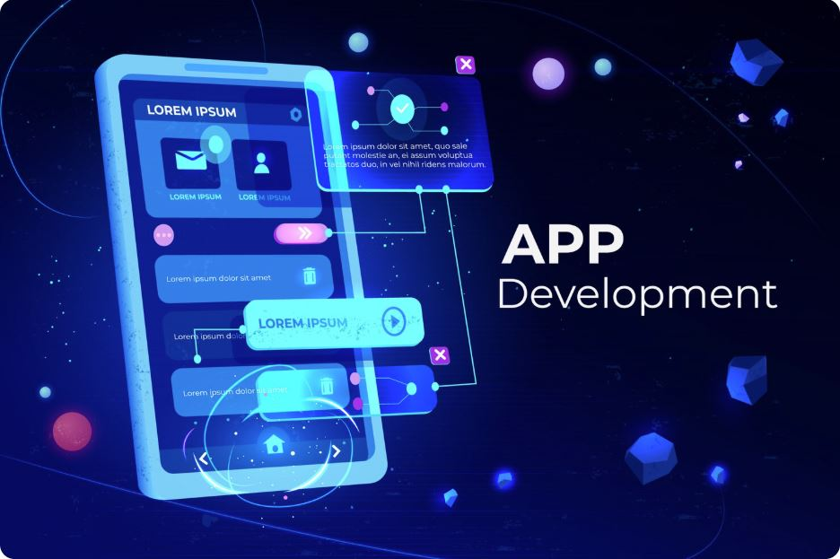

Durante as aulas de Design de Interação no curso de Análise e Desenvolvimento de Sistemas, desenvolvi a prototipagem de um aplicativo bancário com foco na experiência do usuário e na usabilidade da interface. O objetivo da atividade foi compreender como estruturar interfaces digitais de forma intuitiva, facilitando a navegação e a interação do usuário.
A prototipagem foi realizada utilizando a ferramenta Figma, permitindo a criação de telas organizadas e visualmente consistentes. O projeto incluiu funcionalidades comuns a aplicativos bancários, como tela inicial, consulta de saldo, extrato, transferências e navegação entre menus.
Um dos principais focos do trabalho foi a implementação da interatividade entre as telas, simulando a navegação real do aplicativo. Por meio dos recursos do Figma, foram criados fluxos de navegação que conectavam as diferentes páginas, possibilitando a visualização prática da experiência do usuário ao utilizar o sistema.
Durante o desenvolvimento, foram aplicados conceitos importantes de design, como hierarquia visual, padronização de elementos, escolha de cores e organização das informações. Além disso, a atividade contribuiu para o entendimento da importância do planejamento antes da implementação de um sistema.
Esse projeto foi fundamental para desenvolver uma visão mais estratégica sobre a criação de interfaces, destacando a importância do design centrado no usuário no desenvolvimento de soluções digitais.
Aqui estão alguns dos projetos desenvolvidos durante minha trajetória na área de tecnologia da informação, demonstrando minhas habilidades e conhecimentos práticos.
Website desenvolvido para fins acadêmicos durante as aulas de Fundamentos de Desenvolvimento de Software.

Prototipagem de APP para fins acadêmicos durante as aulas de Design de Interação.
Desenvolvimento de banco de dados para fins acadêmicos durante as aulas de Banco de Dados Relacional.